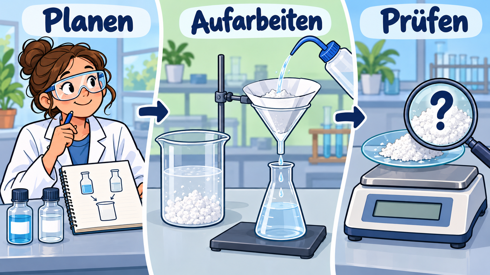

Stoffe chemisch präparieren und aufarbeiten

Die lernende Person kann eine chemische Präparation anhand von Reaktionsgleichung und Stoffmengen planen, sicher durchführen, aufarbeiten und dokumentieren sowie Produktmasse, Ausbeute und Reinheitsgrenzen begründet unterscheiden.